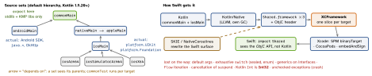

kmp · folio
In one line: KMP compiles one Kotlin codebase to each platform’s native artifact — JVM bytecode for Android, a Kotlin/Native (LLVM) binary shipped as an Objective-C framework for iOS — so you share logic (models, networking, persistence, state) and keep native UI unless you opt into Compose Multiplatform. Swift sees Kotlin through an ObjC header: that header is where every interop trap lives.
Download PDF Print view LaTeX source


What KMP is — and is not
- Targets:
androidTarget(),iosArm64()(device),iosSimulatorArm64(),iosX64()(Intel sim),jvm(), JS, Wasm. Stable since Kotlin 1.9.20 (Nov 2023); Google backs it for shared logic. - Share bottom-up: models, DTOs, networking, validation, repositories, state machines, DB. Keep platform: UI, permissions, push token, Keychain, pickers.
commonMaincannot touchjava.*(use kotlinx-datetime etc.). A library must publish klibs for every target — Maven Central ≠ KMP.expect/actual: functions, classes, objects, properties,typealias. Prefer a commoninterface+ injected impl (testable, can be written in Swift);expectfor thin platform primitives.- vs Flutter/RN: no own renderer, no JS bridge — compiled logic under native UI.
Example — shared API, Swift call site
// commonMain
expect fun platformName(): String
sealed interface Ui
data class Loaded(val items: List<Device>) : Ui
class DevicesSdk(private val api: Api) {
@Throws(ApiError::class, CancellationException::class)
suspend fun refresh(): List<Device> = api.devices()
val state: StateFlow<Ui> = /* ... */
}
// iosMain
actual fun platformName() = UIDevice.currentDevice.systemName()let list = try await sdk.refresh() // cancel won't reach Kotlin
switch sdk.state.value { // Any? (generic erased)
case let s as Loaded: show(s.items) // a cast, not an enum case
default: break } // no exhaustivenessCompose Multiplatform (briefly)
- Shares the UI too:
@ComposableincommonMain, wrapped on iOS byComposeUIViewController { App() }and hosted from SwiftUI viaUIViewControllerRepresentable. Skia draws the pixels — no UIKit controls. iOS stable since CMP 1.8 (2025). - Worth it for form/data-heavy UI, a Kotlin-heavy team, parity over idiom; otherwise keep SwiftUI and share logic only.
What Swift sees
| Kotlin | Swift (via the ObjC header) |
|---|---|
class Greeting | Greeting (ObjC: SharedGreeting); a clash
gets a _ suffix |
top-level fun f() in Util.kt | UtilKt.f() |
object X · companion | X.shared · X.companion |
suspend fun | completion handler → async throws; no cancellation
inward |
Flow / StateFlow | opaque protocol: implement a FlowCollector;
.value is Any? |
sealed class/interface | base class + subclasses; cast with as, need
default |
enum class | class with static instances, not a Swift enum |
generic class Box<T> | ObjC lightweight generic, T: AnyObject |
generic interface, generic fun | erased to Any? |
Int · Long · Int? | Int32 · Int64 ·
KotlinInt? (boxed) |
List<T> · Map | [T] · [K: V] (NSArray /
NSDictionary) |
Unit callback | KotlinUnit |
data class | NSObject subclass: == via isEqual,
copy → doCopy(...) (all args); no value semantics / Codable |
| default arguments | dropped — Swift passes every argument |
exception, no @Throws | crashes the app |
@ObjCName · @HiddenFromObjC | rename · hide from the header |
Tools that fix the surface
- SKIE (Touchlab, Gradle plugin): sealed → Swift enum via
onEnum(of:), Kotlin enums → Swift enums,Flow→AsyncSequence,suspend→asyncwith cancellation. - KMP-NativeCoroutines:
@NativeCoroutines→ SwiftasyncFunction(for:),asyncSequence(for:), Combine publishers. - Still design a Swift-shaped facade: concrete types,
@Throws, no defaults, map to Swift structs at the edge. Swift export (no ObjC header;Flow→AsyncSequence) is Alpha since Kotlin 2.4.0 — breaking changes expected.
Traps
- “KMP shares the UI” — core KMP shares logic; UI is Compose Multiplatform.
.framework= one slice: device-only fails in the simulator — ship an XCFramework.- Kotlin
Intarrives asInt32; nullable primitives asKotlinInt?. - Kotlin cannot
importSwift: Swift implements a Kotlininterfaceand passes it in.
Remember
Share logic, keep UI · common sees nothing platform · Swift sees ObjC · wrap suspend, Flow, sealed.